Bản sắc văn hóa Việt Nam
Khái niệm và các phương diện thể hiện
Bản sắc văn hóa là gì?
Bản sắc văn hóa dân tộc là tập hợp những giá trị đặc trưng, bền vững và tiêu biểu của một cộng đồng dân tộc, được hình thành trong lịch sử và thể hiện trong ngôn ngữ, tín ngưỡng, tập quán, lối sống, nghệ thuật, tư duy và ứng xử.
Bản sắc này là yếu tố làm nên sự khác biệt giữa các dân tộc, đồng thời là cội nguồn của ý thức cộng đồng và căn tính văn hóa.
Nguồn: UNESCO – Tuyên ngôn Toàn cầu về Đa dạng Văn hóa (2001)
Bản sắc văn hóa Việt Nam thể hiện qua những phương diện nào?
Bản sắc này được thể hiện rõ nét qua rất nhiều phương diện, trong đó có ba phương diện sau:
IDấu ấn văn hóa nông nghiệp trong văn hóa vật chất
Đời sống vật chất của người Việt Nam mang đậm dấu ấn của nền văn minh lúa nước và văn hóa nông nghiệp. Các phương diện ăn, mặc, ở đều phản ánh rõ ràng điều này.
Trang phục
Trang phục của Việt Nam vô cùng đa dạng và phong phú qua các thời kỳ. Trang phục nữ từ chiếc yếm đào, áo tứ thân, quần lĩnh, khăn chít đầu đến những chiếc Áo dài (trang phục truyền thống của Việt Nam ta). Trang phục nam từ áo cánh, quần lá tọa đến khăn xếp, áo the, quần ống sớ…
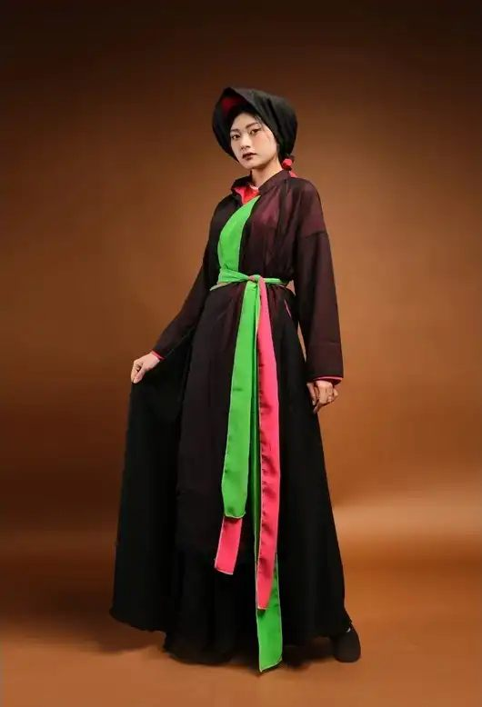
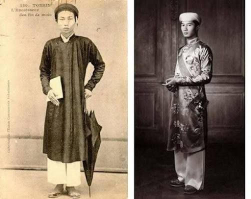
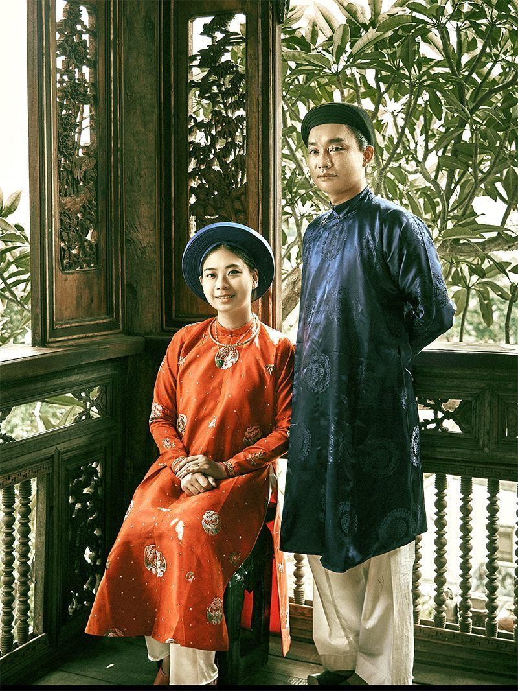
Ăn và mặc
Đồ ăn của người Việt phần lớn là các sản phẩm từ nông nghiệp như cơm, rau, và quả. Đồ mặc cũng được làm ra từ sản phẩm của nghề nông truyền thống như trồng bông và dệt lụa.
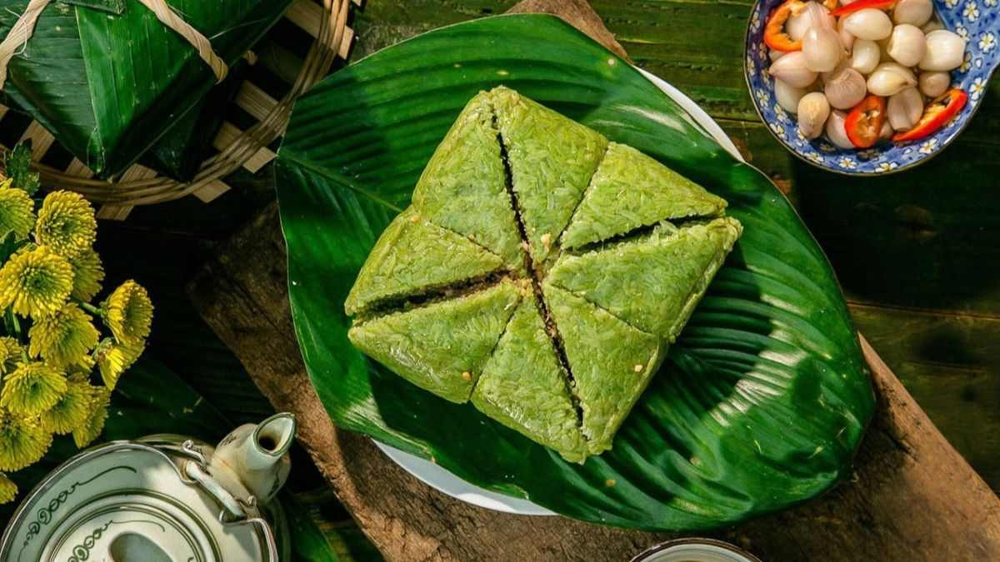
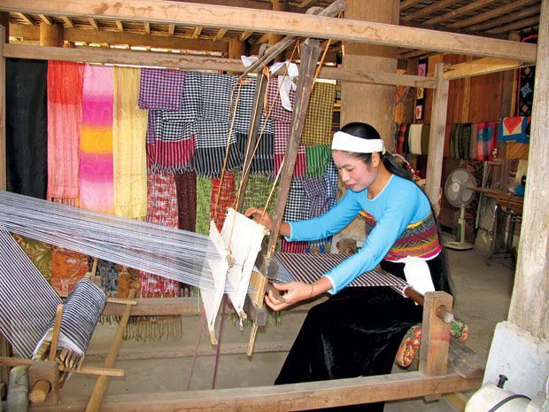
Nhà ở
Nhà ở được thiết kế vừa phù hợp với khí hậu nóng ẩm (nhà sàn, nhà hướng Nam, nhiều cửa sổ để đón gió và tránh nắng), vừa có nhiều khu vực dành cho việc lưu trữ sản phẩm nông nghiệp như buồng, chái, và kho.
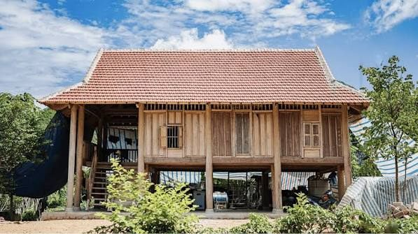
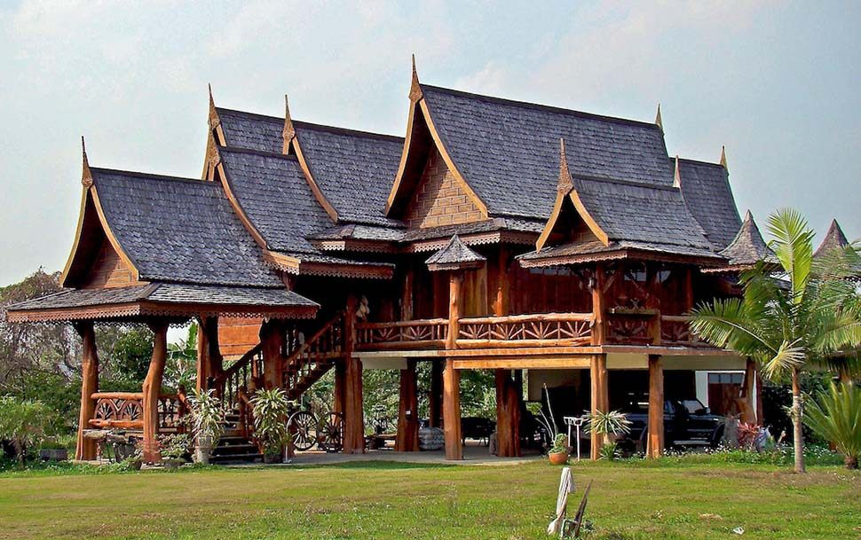
Di sản kiến trúc
Đặc biệt, Việt Nam có rất nhiều kiến trúc được UNESCO công nhận là di sản văn hóa thế giới như: Hoàng thành Thăng Long, phố cổ Hội An…
Nguồn: Danh sách di sản thế giới tại Việt Nam; xem thêm Danh sách Di sản văn hóa phi vật thể quốc gia (Việt Nam)
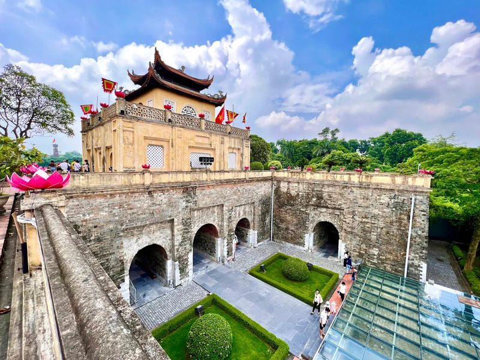
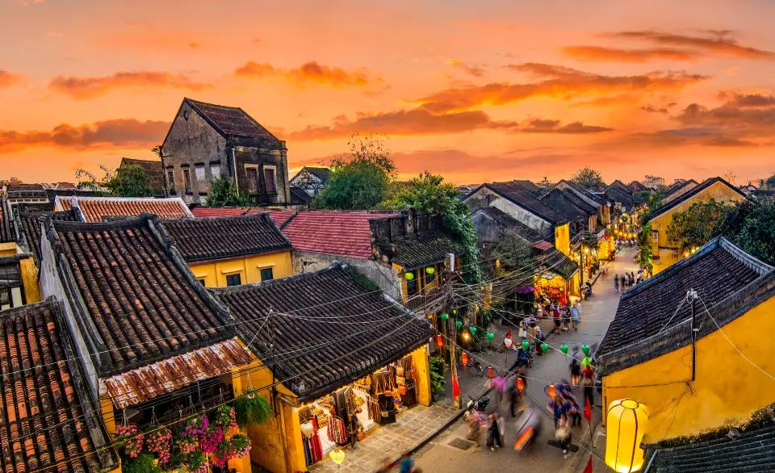
IITổ chức đời sống cộng đồng: tinh thần định cư và đoàn kết
Bản sắc văn hóa Việt Nam được xây dựng trên cơ sở nền văn minh lúa nước, thúc đẩy lối sống định cư và sự gắn kết chặt chẽ. Cuộc sống của người Việt luôn luôn gắn bó mật thiết với xóm làng, quê hương. Từ thuở bình minh của lịch sử, người Việt liên tục phải chống chọi với thiên tai và giặc ngoại xâm để bảo vệ đất nước và dân tộc. Vì thế, người Việt sớm có tình yêu tha thiết với quê hương đất nước và gắn bó máu thịt với dân tộc mình.
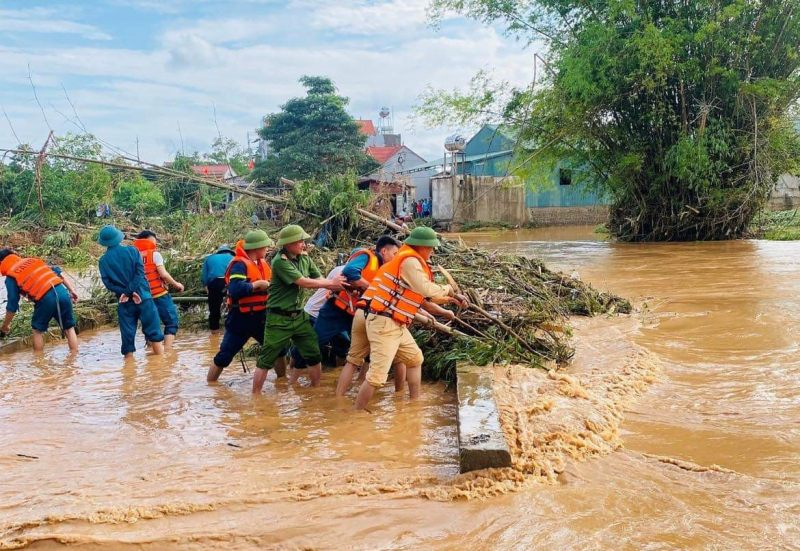
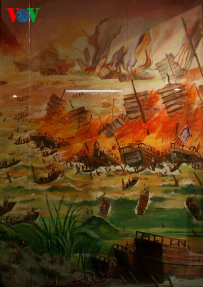
Cùng với tình yêu đất nước, người Việt còn có sự gắn kết gia đình, gia tộc, và dòng họ. Văn hóa gia đình được nảy nở và bao bọc trong văn hóa cộng đồng làng xã. Hệ thống các công trình văn hóa cộng đồng như cổng làng, đường làng, giếng làng, đa làng, tre làng, chùa làng, đình làng, miếu làng… đều có tác động sâu sắc đến văn hóa gia đình từ không gian cư trú đến đời sống tâm linh và tinh thần. Các gia đình và dòng họ lưu giữ nhiều văn bia, văn tự, gia phả, tộc phả, đình miếu, nhà thờ họ, lăng mộ, sắc phong… Những vẻ đẹp văn hóa ấy vừa là niềm tự hào vừa có tác dụng vô cùng to lớn đối với việc giáo dục thế hệ trẻ.
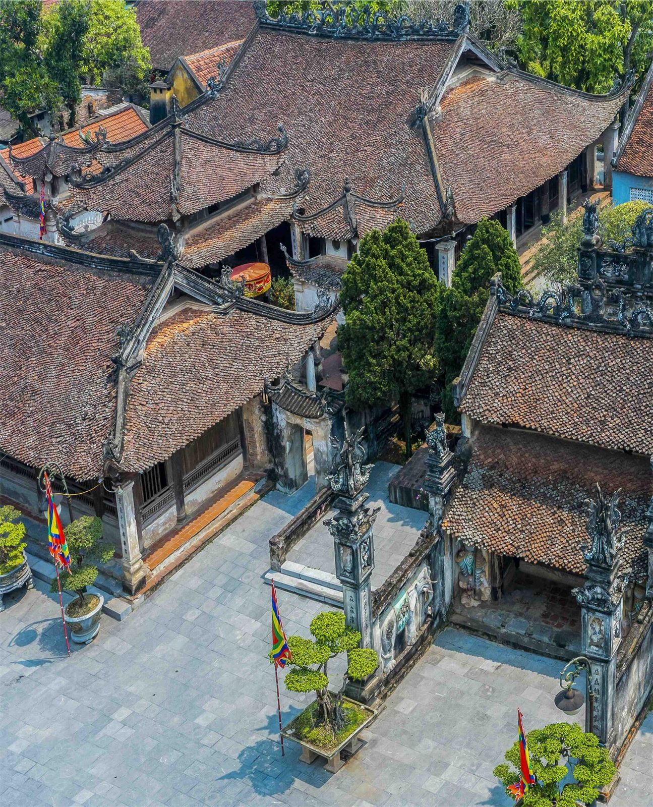
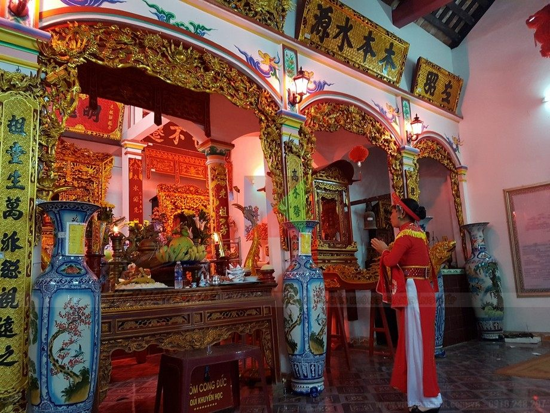
IIIỨng xử: trọng tình thương và linh hoạt, hòa nhập
Đặc điểm nổi bật trong cách ứng xử của người Việt là sự trọng tình thương và đạo lý, cùng với tinh thần linh hoạt, cởi mở trong tiếp nhận và dễ hòa nhập. Truyền thống nhân văn, nhân ái của dân tộc đã được tổng kết thành nhiều ngạn ngữ, thành ngữ, lời ca:
Đặc điểm bản sắc văn hóa này đã góp phần to lớn làm nên sức mạnh của cộng đồng 54 dân tộc anh em trên đất nước Việt Nam, là thành trì vững bền trong lịch sử dựng nước và giữ nước.
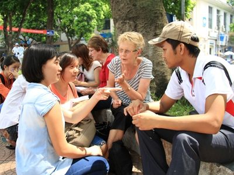